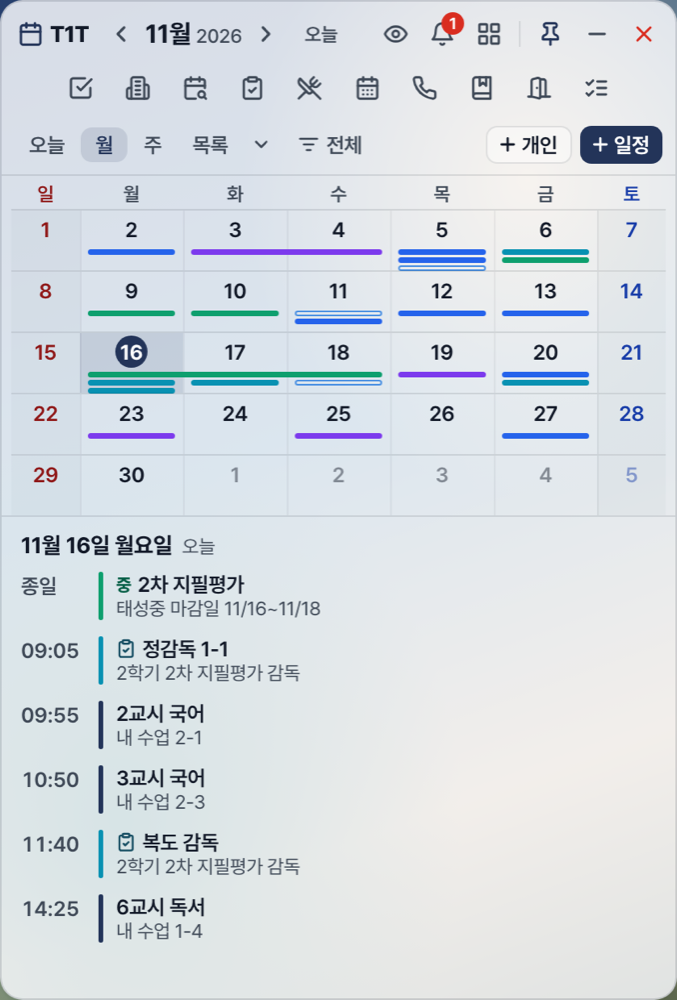
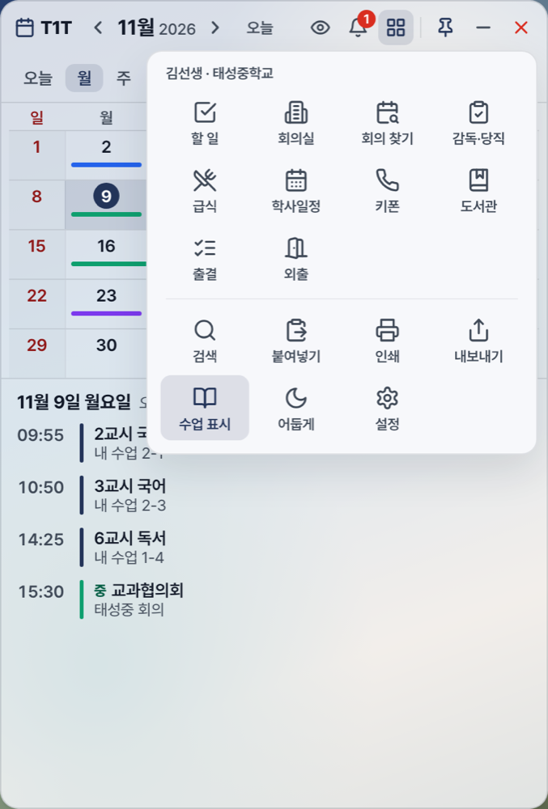
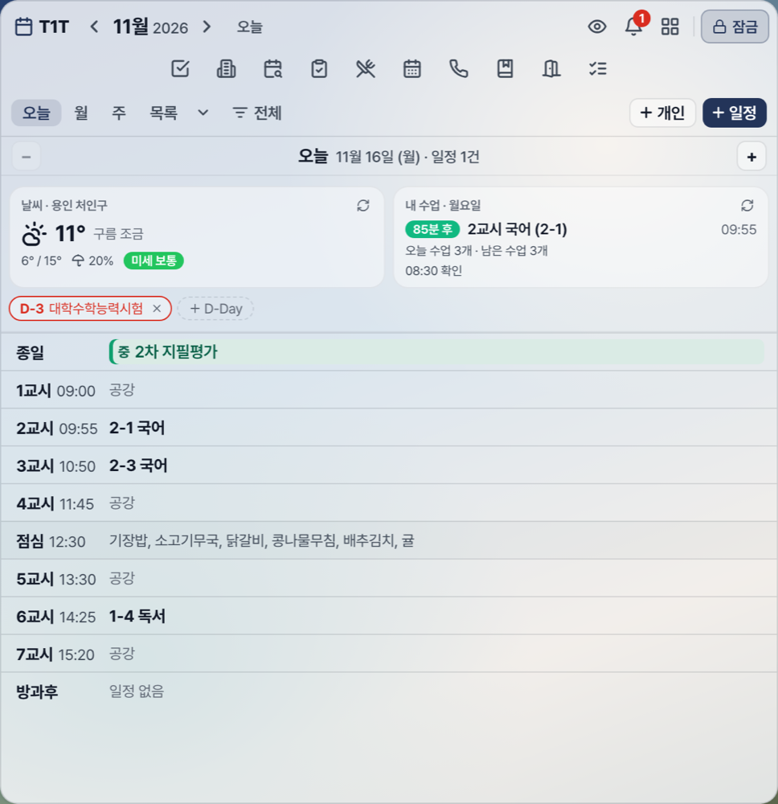
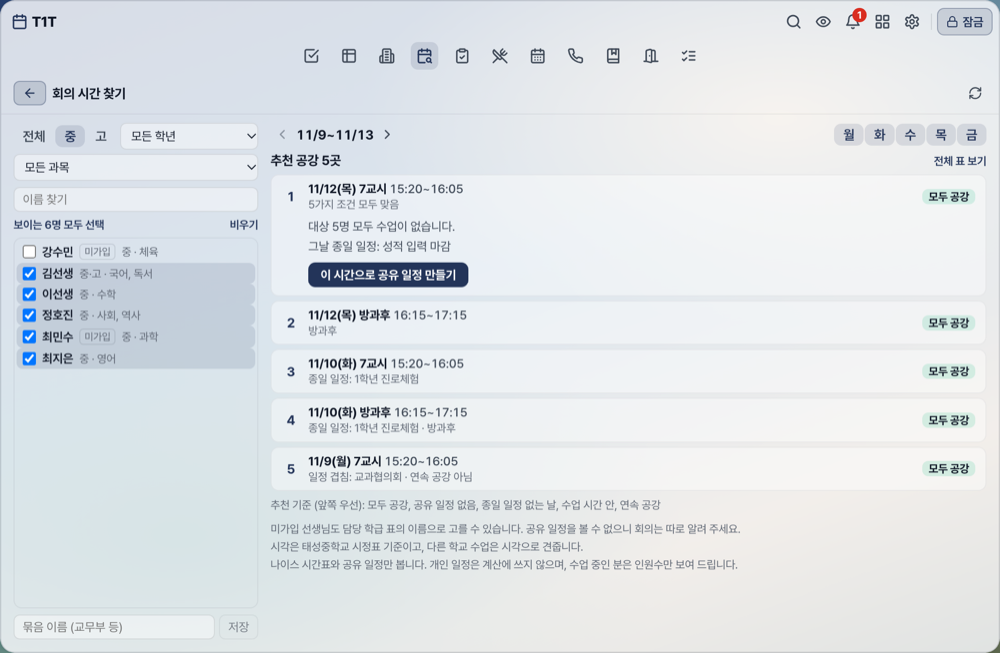
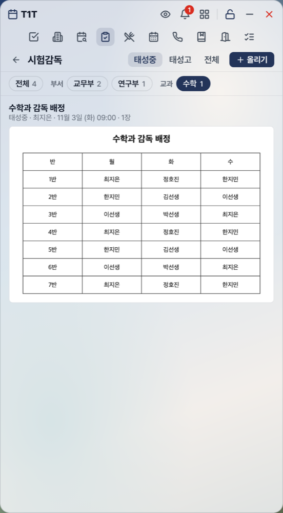

왜 T1T인가?
태성중·고 교사들이 학교 일정 · 회의 · 시험 · 행사를 한눈에 보고, 개인 일정 · 시간표 · 급식 · 학사일정 · 도서관까지 PC 한 화면에서 관리할 수 있도록 만든 데스크톱 도구입니다. 양교를 함께 보거나 본인 학교만 골라 볼 수 있고, 투명 위젯 모드로 책상 옆 작은 비서처럼 씁니다.
실시간 공유 — 한 명이 등록하면 모든 교사 화면에 바로 반영됩니다.
양교 통합 — 태성중·고 일정을 학교별 색으로 구분합니다.
승인제 가입 — 관리자 승인 후에만 쓸 수 있습니다.
개인 일정 보호 — 개인 일정은 본인만 보며, 수업 시간에는 자동으로 가립니다.
자동 업데이트 — 새 버전을 받아 두었다가 알아서 설치합니다.
오프라인 안정성 — 인터넷이 끊겨도 마지막 일정을 보여 주고, 다시 연결되면 맞춥니다.
2. 주요 기능 한눈에 보기
오늘 · 월 · 주 · 목록
오늘과 주는 교시 기준. 일 · 년 · 통계도 있습니다
반복 일정
평일 매일, 매주, 격주, 매월. 공휴일 건너뛰기
일정 응답
참석 · 불참이나 확인을 받아 모아 봅니다
쪽지 · 공문 붙여넣기
날짜를 읽어 개인 일정 초안을 만듭니다
수업 화면 보호
내 수업 시간에 개인 일정을 자동으로 가립니다
회의 시간 찾기
대상 교사가 모두 수업이 없는 교시를 보여 줍니다
시험감독 게시판
부서, 교과별로 표 사진을 올리고 탭을 골라 봅니다
내 시간표
나이스 시간표로 내 수업 자동 연결, 수업 전 알림, 수업 변경 알림
테마와 개인 옵션
테마 7종, 강조색, 글자 크기, 크게 보기
일정 알림
10분 · 30분 · 1시간 · 1일 전 알림
할 일
우선순위와 마감일. 본인만 봅니다
Google Calendar 연동
선택하면 양방향으로 맞춥니다
급식 · 학사일정
학교 홈페이지에서 자동으로 가져옵니다
키폰 번호부
양교 부서 · 교사 번호 검색
회의실 · 도서관
회의실 예약과 독서로 도서 검색을 앱 안에서
외출시스템 · 외출상황
외출·조퇴 시스템과 외출 신청 조회를 앱 안에서 엽니다
3. 설치 방법
📎 설치 파일 받는 곳: https://shor.kr/25m
PC 브라우저 주소창에 입력하면 구글 드라이브 폴더가 열립니다. 로그인은 필요 없습니다. 파일이 커서 "바이러스 검사를 할 수 없습니다" 경고가 나오면 무시하고 다운로드를 누릅니다.
Windows
폴더에서 T1T-Setup-버전.exe를 받아 더블 클릭
"Windows의 PC 보호" 경고가 뜨면 → 추가 정보 클릭 → 실행 클릭 (자체 서명이라 처음에는 경고가 뜨지만 안전합니다)
설치 마법사: 다음 → 설치 위치 선택 → 설치
설치 완료 후 자동 실행 (앱 아이콘이 바탕화면에 생성됨)
처음 실행 시 회원가입 → 관리자 승인 대기 → 승인 완료 후 로그인 가능
Mac
폴더 안의 mac 폴더를 엽니다.
내 Mac의 칩에 맞는 파일을 받습니다. 칩은 사과 메뉴 > 이 Mac에 관하여에서 봅니다. Apple 칩(M1 이후): T1T-버전-arm64.dmg · Intel: T1T-버전.dmg
dmg를 열어 T1T를 Applications 폴더로 끌어다 놓습니다.
Applications 폴더에서 T1T를 엽니다. Apple 인증을 받지 않은 앱이라 처음에는 막힐 수 있습니다. 그러면 시스템 설정 > 개인정보 보호 및 보안에서 그래도 열기를 누릅니다.
처음 실행 시 회원가입 → 관리자 승인 대기 → 승인 완료 후 로그인 가능
4. 설치 시 자주 발생하는 에러와 해결법
❶ "Windows의 PC 보호" 경고가 뜨며 설치가 중단됨
SmartScreen이 알려지지 않은 게시자라고 경고합니다. 안전한 파일입니다.
경고 창에서 추가 정보 (More info) 클릭
아래에 표시되는 실행 (Run anyway) 클릭
❷ "관리자 권한이 필요합니다" 또는 UAC 차단
설치 파일을 우클릭 → 관리자 권한으로 실행
UAC 창에서 예 클릭
❸ "이전 버전이 실행 중입니다" / 설치가 멈춤
이전 T1T가 작업 표시줄/시스템 트레이에 살아있어 파일이 잠겨 있습니다.
작업 표시줄 우측 트레이 → T1T 아이콘 우클릭 → 종료
또는 Ctrl+Shift+Esc → 작업 관리자 → T1T.exe 모두 종료
잠시 후 설치 파일 다시 실행
❹ 백신/보안 프로그램이 차단함
일부 백신(V3, 알약 등)이 알려지지 않은 .exe를 차단할 수 있습니다.
백신 격리 폴더에서 예외 등록 (허용) 후 다시 설치
또는 설치 동안만 백신 일시 정지
❺ "설치 후 앱이 흰 화면" 또는 "실행 안 됨"
아래 섹션 5의 절차로 완전 제거 후 재설치
그래도 안 되면 PC 재부팅 후 재시도
❻ "구글 캘린더 연동 안 됨" 빨간 메시지
오래된 버전에서 발생 — 최신 버전으로 재설치
방화벽이 http://127.0.0.1:8123 차단 시 → 방화벽 예외 등록
❼ Mac: "손상되었기 때문에 열 수 없습니다"
Apple 인증을 받지 않은 앱을 인터넷에서 받으면 나올 수 있습니다.
T1T를 Applications 폴더에 둔 채 터미널을 엽니다.
xattr -dr com.apple.quarantine /Applications/T1T.app 을 붙여 넣고 Return을 누릅니다.
T1T를 다시 엽니다.
5. 기존 ToneT/T1T 완전 제거 (Geek Uninstaller)
왜 완전 제거가 필요한가?
T1T는 자동 업데이트로 대부분 매끄럽게 갱신되지만, 옛 버전(ToneT 또는 T1T v2.4 이하)이 남아 있거나 충돌이 의심되면 완전 제거 후 재설치가 가장 확실합니다. 첨부된 Geek Uninstaller는 일반 제어판 제거와 달리 레지스트리 + 잔재 파일까지 깔끔하게 정리합니다.
Geek Uninstaller 사용법
이메일/메신저로 받은 geek.exe 또는 geek.zip을 바탕화면에 저장
설치 없이 더블 클릭만으로 실행되는 휴대용 프로그램입니다.
geek.exe 더블 클릭 (SmartScreen 경고 → 자세히 → 실행)
설치된 프로그램 목록에서 T1T 또는 ToneT 찾기 (검색창에 입력하면 빠름)
해당 항목을 우클릭 → 강제 제거 (Force Removal) 선택
"제거 (Uninstall)" 대신 "강제 제거"를 권장 — 잔재까지 정리됨
경고 창에서 예 클릭, 잠시 대기
완료되면 %LOCALAPPDATA%\T1T 폴더가 남아있는지 확인:
키보드 Win+R → %LOCALAPPDATA% 입력 → Enter → T1T 폴더 있으면 휴지통으로 이동
PC 재부팅 (권장)
새 T1T-Setup-버전.exe를 받아 깨끗하게 설치
💡 팁: Geek Uninstaller는 한 번 받아두면 다른 프로그램 제거에도 유용합니다. 휴대용이라 USB에 담아 다녀도 됩니다.
6. 처음 시작 — 회원가입과 로그인
앱 실행 → 첫 화면에서 회원가입 클릭
이메일 · 비밀번호 · 이름 · 학교(태성중/태성고) 입력
가입 완료 → 관리자 승인 대기 화면 표시
관리자가 승인하면 로그인 가능
설정 → 프로필 색 변경 가능 (개인 일정 기본 색이 됨)
7. 화면 사용법

좁은 창: 색 막대와 그날 일정 목록

격자 아이콘을 누르면 도구 모음이 열립니다

오늘 화면: 교시마다 수업과 일정
창 위치 잠금
상태
설명
전환
잠금
창 위치와 크기를 고정합니다. 내용을 입력하고 고치는 것은 그대로 됩니다.
제목 줄의 열린 자물쇠 아이콘
잠금 풀림
창을 옮기고 크기를 바꿀 수 있습니다. 최소화와 닫기 단추가 나옵니다.
제목 줄의 잠금 단추 또는 Ctrl+Shift+C
제목 줄과 도구 모음
제목 줄에는 날짜 이동, 개인 일정 가리기(눈 아이콘), 알림(종 아이콘), 도구 모음(격자 아이콘)이 있습니다. 그 아래 가운데 아이콘 줄에 할 일, 회의실, 회의 찾기, 시험감독, 급식, 학사일정, 키폰, 도서관, 외출시스템, 외출상황이 늘 보입니다. 아이콘에 마우스를 가까이 대면 커지면서 위쪽에 이름이 나오고 색이 바뀝니다. 창이 넓으면 제목 줄에 검색과 설정도 함께 보입니다.
할 일
내 작업 관리
회의실
회의실 예약
회의 찾기
모두 비는 교시
시험감독
부서·교과별 표 사진
급식
주간 식단
학사일정
홈페이지 일정
키폰
양교 번호부
도서관
독서로 검색
외출시스템
외출·조퇴 시스템
외출상황
외출 신청 조회
검색 · 붙여넣기
일정 찾기, 공문에서 일정
인쇄 · 내보내기
달력 인쇄(개인 일정은 고를 때만), .ics 파일
수업 표시
달력에 내 수업 켜고 끄기
어둡게 · 밝게
테마 빠른 전환
설정
화면, 알림, 연동
관리자
관리자에게만 보입니다
기초 시간표
관리자: 중·고 컴시간 파일 올리기
달력 보기
보기
내용
오늘
교시마다 내 수업과 일정, 점심 줄의 급식 메뉴. 날씨, D-Day, 다음 수업 카드가 함께 나옵니다.
월
창이 넓으면 칸에 일정 제목과 오른쪽 오늘 칸이 나오고, 좁으면 색 막대와 아래 일정 목록이 나옵니다. 여러 날 일정은 이어진 막대로 보입니다.
주
교시를 줄로 한 주간 표입니다.
목록
다가오는 일정을 날짜 순서로 봅니다.
더 보기
일 · 년 · 통계 보기가 있습니다.
단축키
키
동작
Ctrl+Shift+H
개인 일정 가리기 · 보이기
Ctrl+Shift+C
창 위치 잠금 · 풀기 전환. Word, PowerPoint의 서식 복사와 겹치면 설정 > 화면에서 끌 수 있습니다
Ctrl+Shift+X
클릭 통과 켜기 · 끄기
Ctrl+V
달력에서 누르면 쪽지 · 공문 붙여넣기 창이 열립니다
Mac에서는 Ctrl 대신 Cmd를 누릅니다. 다른 프로그램이 같은 키를 쓰면 동작하지 않을 수 있으니, 그때는 제목 줄 아이콘이나 작업 표시줄 트레이 메뉴를 써 주세요.
8. 일정 등록과 보기
칸에 바로 입력
월 칸이나 교시 줄을 더블클릭하면 그 자리에서 제목만 쓰고 저장합니다. "3시 회의", "3교시 공개수업"처럼 쓰면 시각도 읽습니다. 잘못 눌러 공유되지 않도록 기본은 개인 일정이고, 공유를 고르면 공유 일정이 됩니다. 개인 일정을 가린 동안에는 공유를 직접 눌러야 저장됩니다.
공유 일정 (모든 교사에게 보임)
오른쪽 위 + 일정 단추를 누릅니다.
제목, 시간, 분류(행사 · 회의 · 마감일 · 공지 · 기타), 공유 대상(태성중 · 태성고 · 공통)을 넣습니다.
필요하면 반복과 응답을 고릅니다.
등록하면 대상 교사 화면에 바로 나타납니다.
개인 일정 (본인만 보임)
+ 개인 단추를 누릅니다. 달력에 자물쇠 표시로 나오고 다른 사람에게는 보이지 않습니다.
반복 일정
안 함, 평일 매일, 매주(요일 선택), 격주, 매월 같은 날, 매월 N째 요일 중에서 고릅니다.
종료일을 정하고, 공휴일을 건너뛸 수 있습니다.
반복 일정을 고치거나 지울 때는 이 회차만 · 이후 · 전체 중에서 고릅니다. 끌어서 옮기면 그 회차만 옮겨집니다.
일정 응답
공유 일정을 만들 때 참석·불참 받기나 확인 받기를 고르면, 일정을 연 선생님이 답할 수 있습니다. 불참 사유 칸은 없습니다. 응답에는 이름이 남으므로 인사나 평가 의견을 묻는 용도로 쓰지 말아 주세요.
쪽지 · 공문 붙여넣기
메신저나 공문의 글을 복사한 뒤 달력에서 Ctrl+V를 누릅니다. (도구 모음 > 붙여넣기도 같습니다)
"11월 12일", "11.12.", "다음 주 금요일" 같은 표현을 읽어 일정 초안이 나옵니다.
고치고 고른 것만 개인 일정으로 저장합니다.
글은 이 PC 안에서만 읽고 저장하지 않습니다. 틀릴 수 있으니 저장 전에 날짜를 확인해 주세요.
공휴일
공휴일과 대체공휴일이 달력에 표시됩니다. 재량휴업일은 학교 공유 일정으로 올려 주세요.
9. 수업 화면 보호
내 시간표가 연결되어 있으면 내 수업 시간에는 시작 1분 전부터 끝날 때까지 개인 일정, 할 일, 직접 넣은 D-Day를 자동으로 가립니다. 프로젝터나 전자칠판에 띄워도 보이지 않게 하기 위해서이며, 끄는 설정은 없습니다.
잠시 보이게 하거나 가리려면 제목 줄의 눈 아이콘, Ctrl+Shift+H, 트레이 메뉴를 씁니다.
가린 동안 온 알림은 소리 없이 모았다가 가림이 풀리면 보여 줍니다.
내 시간표가 연결되지 않으면 자동으로 가리지 않고 단축키로만 가릴 수 있습니다.
내 수업에 빠진 시간이 있으면 그 시간에는 가려지지 않습니다. 10장을 보고 고쳐 주세요.
10. 내 시간표
내 수업은 나이스 시간표에서 받습니다. 나이스에는 교사 이름이 없어서 학교별 담당 학급 표와 맞춥니다. 표의 이름이 로그인한 이름과 같으면 선생님이 따로 할 일 없이 학교와 이름으로 자동 연결됩니다.
관리자가 컴시간 파일을 올린 학교는 그 파일이 학교 기초 시간표가 되고, 나이스와 칸마다 대조해 바뀐 수업만 그 주에 반영합니다.
연결되는 방법
전에 컴시간 시간표를 연결한 PC는 남아 있는 시간표를 표에 자동으로 올립니다. 같은 과목을 나눠 가르치는 수업과 나이스에 없는 이동수업은 요일과 교시가 그대로 남습니다.
관리자가 컴시간 파일이나 담당 학급 표를 올리면 표의 이름으로 연결됩니다.
표에 이름이 없으면 설정 > 내 시간표에 직접 넣습니다. 예: 국어 2-1 2-3
나이스 시간표에 없는 이동수업은 요일과 교시를 함께 적습니다. 예: 문학 3-1 월4 수3
확인과 갱신
설정 > 내 시간표에서 담당 과목, 학급, 이번 주 수업 수를 봅니다. 틀리면 담당 학급 고치기를 누릅니다. 지금 값이 채워져 나오니 틀린 곳만 고치면 됩니다.
매일 8시부터 16시까지 정각마다 나이스 시간표를 다시 받습니다. 앱을 켤 때 받은 지 오래되었으면 바로 받습니다. 바로 받으려면 새로고침을 누릅니다.
그날 바꾼 수업은 학교가 나이스에 입력한 뒤 다음 정각에 나옵니다. 직접 적은 요일과 교시는 나이스가 바뀌어도 따라가지 않으니 시간표가 바뀌면 직접 고칩니다.
기초 시간표로 연결되면 설정 > 내 시간표의 기초 시간표와 다른 수업에서 이번 주 교체, 보강, 단축을 봅니다. 나이스에 칸이 없는 이동수업은 평소와 같은 날이면 기초 시간표대로 둡니다.
수업 시작 전 알림은 설정 > 오늘 화면 위젯에서 끄거나 시간을 바꿀 수 있습니다.
이번 주에 남은 내 수업이 바뀌면 화면 위쪽에 무엇이 어떻게 바뀌었는지 나오고, 확인을 누를 때까지 남습니다. 새 주를 처음 받을 때는 기초 시간표와 다른 남은 수업을 알려 줍니다.
시간표를 받지 못할 때
시간표를 오랫동안 받지 못하면 화면 위쪽에 "나이스에서 시간표를 받지 못하고 있습니다"가 나옵니다. 운영자에게 알리기를 눌러 주세요. 운영자 앱에 바로 알림이 가며, 누가 눌렀는지는 남지 않습니다. 그동안 수업 표시와 수업 화면 보호는 마지막으로 받은 시간표로 동작합니다.
관리자: 기초 시간표 올리기
도구 모음 > 기초 시간표를 엽니다. 관리자에게만 보입니다. 위쪽에서 태성중이나 태성고를 고릅니다. 단추 아래에 학교마다 올린 날짜가 나옵니다.
컴시간 파일 올리기에 그 학교 컴시간 프로그램에서 저장한 시간표 CSV 파일을 끌어다 놓거나 파일 고르기로 고릅니다. 주간시간표, 교사시간표, 전체시간표 중 하나면 됩니다. 중학교 프로그램이 저장하는 모양(교사마다 한 줄인 주간시간표, 머리 줄에 이름이 있는 교사시간표)도 읽습니다.
읽은 선생님 수와 나이스와 같은 칸 비율을 확인하고 태성중학교 기초 시간표로 저장(태성고는 태성고등학교)을 누릅니다. 학교 기초 시간표로 저장되고 모든 선생님이 한 번에 연결됩니다.
교사시간표 파일이면 시정표도 파일대로 바꾸기로 시정표도 함께 저장됩니다. 나이스에는 수업 시각이 없습니다.
기초 시간표는 매일 8시부터 16시까지 정각마다 나이스와 칸마다 대조합니다. 같은 칸에 다른 과목이 오면 그 반에서 그 과목을 가르치는 선생님에게 옮기고, 보강 칸은 원래 선생님 수업에서 빼며, 평소와 같은 날 나이스의 빈 칸은 기초 시간표대로 둡니다. 그 주 대조 결과는 지금 기초 시간표 칸에 나옵니다. 다른 학교 파일이거나 시험 주간처럼 그 주 나이스가 평소와 크게 다르면 저장하지 않으니, 평소 수업을 하는 주에 올려 주세요. 선생님이 직접 고친 값은 직접 고친 N명도 파일대로 바꾸기를 고른 경우에만 바꿉니다.
스포츠클럽처럼 나이스가 동아리활동 같은 다른 이름으로 적는 수업은 요일과 교시대로 둡니다. 컴시간은 학년을 섞은 모둠에 모둠 번호를 반 번호처럼 씁니다(1학년이 두 반인데 103). 나이스에 없는 이런 반의 수업은 그날 그 학년 시간표를 따라 남기거나 뺍니다.
관리자: 담당 학급 표
도구 모음 > 관리자 > 담당 학급 표에서 학교를 고르면 지금 표와 시정표를 보고 고칩니다. 컴시간 파일은 위의 기초 시간표 메뉴에서 올립니다.
시정표에는 교시 시작 시각을 차례로 넣습니다.
파일이 없으면 줄마다 이름, 과목, 학급 순서로 붙여 넣고 표 확인을 누릅니다. 엑셀이나 한글 표를 복사해도 됩니다. 예: 김선생 국어 2-1 2-3, 이선생 수학 1-1~4. 과목이 나이스 시간표에 없으면 알려 줍니다.
표의 이름은 계정 이름과 글자까지 같아야 연결됩니다. 표에 없는 선생님은 화면 아래에 이름이 나옵니다. 자동이나 컴시간 파일로 연결된 선생님은 표를 붙여 넣어도 그대로 둡니다. 바꾸려면 표 확인 뒤 자동 연결된 N명도 이 표로 바꾸기나 컴시간 파일로 올린 N명도 이 표로 바꾸기를 고릅니다. 학기가 바뀌면 파일이나 표를 다시 올려 주세요.
11. 회의 시간 찾기

회원과 요일을 고르면 공강 추천 5곳이 나옵니다 (예시 이름)
아이콘 줄이나 도구 모음에서 회의 찾기를 엽니다.
가입한 회원을 눌러 고릅니다. 학교, 수업 학년, 과목, 이름으로 좁힐 수 있습니다. 자주 쓰는 대상은 묶음으로 저장해 두면 이 PC에서 다시 불러올 수 있습니다.
원하는 주와 요일을 고릅니다. 요일 단추를 누르면 켜고 끕니다.
추천 공강 5곳이 나옵니다. 모두 공강 → 공유 일정 없음 → 종일 일정 없는 날 → 수업 시간 안 → 연속 공강 순서로 따져 고르고, 맞지 않는 조건은 글로 알려 줍니다. 모두 되는 시간이 모자라면 가장 많이 되는 시간으로 채웁니다.
추천을 누르고 이 시간으로 공유 일정 만들기를 누르면 참석 · 불참 응답을 받는 일정 창이 채워져 열립니다.
나이스 시간표와 공유 일정만 봅니다. 개인 일정과 구글 일정은 계산에 쓰지 않으므로, 개인 사정과 겹치는 시간이 나올 수 있습니다. 그때는 불참으로 답해 주시면 됩니다. 수업 중인 분은 이름 없이 인원수만 보여 줍니다.
모든 칸을 보려면 전체 표 보기를 누릅니다. 가능 = 모두 수업 없음, 2명 = 2명이 수업 중, 일정 = 수업은 없지만 공유 일정과 겹침입니다. 이번 주 시간표를 받으므로 다음 주 이후는 이번 주 시간표로 어림합니다. 가입해 시간표가 연결된 회원만 나오며, 관리자가 연결을 저장하기 전에는 컴시간 표기로 보입니다.
관리자: 회의 찾기에는 담당 학급 표에 있는 선생님이 나옵니다. 표는 10장을 봐 주세요.
관리자: 비활성화와 가입 거절은 확인을 받습니다. 실수했으면 도구 모음 > 관리자 > 비활성·거절에서 되돌립니다.
12. 시험감독 게시판
보기
아이콘 줄의 시험감독을 누르면 올라온 표 사진이 최신순으로 나옵니다.
위쪽 탭에서 부서나 교과를 고르면 그 사진만 나옵니다. 처음에는 내 학교와 양교 글이 보이고, 오른쪽 위에서 학교를 바꿀 수 있습니다.
사진을 누르면 크게 봅니다. 화살표로 넘기고, 사진을 누르거나 + 단추로 키운 뒤 끌어서 옮깁니다. 저장 단추를 누르면 PNG 파일로 저장합니다.
새 사진이 올라오면 양교 모든 선생님께 알림이 갑니다. 알림을 누르면 게시판이 열립니다.

탭을 골라 보는 표 사진 (예시)
올리기
시험감독을 열고 올리기를 누릅니다.
부서나 교과를 고르고 이름을 넣습니다. 이 이름이 탭이 됩니다. 제목은 없어도 됩니다.
학교를 고릅니다. 태성중, 태성고, 양교 중에서 고릅니다.
사진 고르기로 여러 장을 고릅니다. 끌어다 놓아도 됩니다. 한글, 엑셀, PDF 표는 화면을 캡처해 Ctrl+V로 붙여 넣습니다.
순서를 확인하고 올립니다. 글 하나에 20장까지 올릴 수 있습니다.
고칠 때는 지우고 다시 올립니다. 글은 올린 사람과 관리자만 지울 수 있습니다. 사진은 글자가 보이는 크기로 줄여서 올라갑니다. 아이폰 HEIC 사진은 읽지 못하니 화면을 캡처해 주세요.
사진은 모든 선생님이 볼 수 있습니다. 시험 문제, 평가 자료, 개인 사유가 사진에 들어 있지 않은지 확인하고 올려 주세요.
13. 테마와 개인 옵션
설정 > 화면에서 고르면 바로 적용되고 미리보기로 확인할 수 있습니다.
옵션
내용
테마
맑음, 모눈노트, 칠판, 야간자습, 벚꽃, 고대비, 시스템 설정 따르기
강조색
테마 기본과 5가지 색
일정 글자
13 · 15 · 18px
크게 보기
글자, 배율, 농도를 한 번에 키웁니다. 원래대로 되돌릴 수 있습니다
일정 색 기준
학교, 분류, 작성자
색 구분 돕기
색을 벌리고 무늬를 더해 색만으로 구분하지 않게 합니다
주말 숨기기
월 화면에서 토 · 일 열을 뺍니다
배경 농도 · 화면 배율
이 PC에만 저장됩니다. 나머지 옵션은 계정을 따라갑니다
공유 일정 시작 전 알림
설정 > 알림 설정에서 끄거나 시간을 바꿉니다. 내 학교와 공통 일정만 알리고 종일 일정은 알리지 않습니다
설정은 누르는 즉시 저장됩니다. 저장 단추는 따로 없습니다.
14. 외부 도구
외출시스템
아이콘 줄의 문 아이콘이나 도구 모음 > 외출시스템을 누르면 비밀번호를 넣지 않고 바로 다음 화면이 열립니다.
외출상황
아이콘 줄의 목록 아이콘이나 도구 모음 > 외출상황을 누르면 그날의 외출 신청 내용이 앱 안에서 열립니다.
도서관 도서 검색
앱 안에 독서로 도서 검색 페이지가 열립니다.
위쪽에서 태성중 · 태성고를 고릅니다.
학사일정 · 급식
학교 홈페이지에서 자동으로 가져옵니다.
학사일정은 매일 오전 7시에 맞춥니다. 급식은 주간 단위로 바로 조회합니다.
키폰 번호부
양교 번호를 부서, 이름, 직책, 번호로 찾습니다. 번호를 누르면 복사됩니다.
관리자만 추가, 수정, 삭제할 수 있습니다.
15. 업데이트와 종료
자동 업데이트
새 버전이 나오면 앱이 뒤에서 받습니다.
다 받으면 위쪽에 업데이트 준비 완료가 나옵니다.
잠시 자리를 비우거나 화면을 잠그면 자동으로 설치되고, 바로 하려면 지금 설치를 누릅니다.
새 버전이 실행되면 업데이트 완료 알림이 나옵니다.
수동 확인: 설정 > 정보의 업데이트 확인 단추로 바로 확인할 수 있습니다. 단추 아래에 마지막 확인 시각과 진행 상태가 나옵니다.
업데이트가 안 될 때: 설치 주소(https://shor.kr/25m)나 설정 > 정보의 수동 다운로드에서 설치 파일을 받아 덮어 설치하면 됩니다. 일정과 설정은 그대로입니다. 브라우저로도 받기가 멈추면 학교망에서 GitHub 파일 서버가 막힌 것일 수 있습니다. 기록 복사를 눌러 운영자에게 붙여 넣어 보내 주시면 원인을 찾을 수 있습니다.
종료 / 시작
창의 X를 누르면 트레이로 내려가고 앱은 계속 실행됩니다.
완전히 끄려면 트레이 아이콘을 우클릭해 종료를 누릅니다.
설정의 시작 시 자동 실행으로 부팅 때 자동으로 켤 수 있습니다.
16. 문의
버그 신고, 기능 제안, 사용 문의: 이봉기 선생님 (학생성장플랫폼부)에게 직접 문의해 주세요. 교내 키폰 8270 · 070-7540-8270